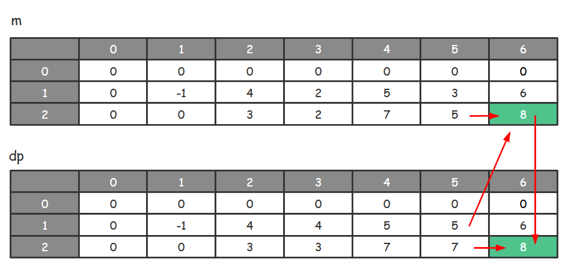
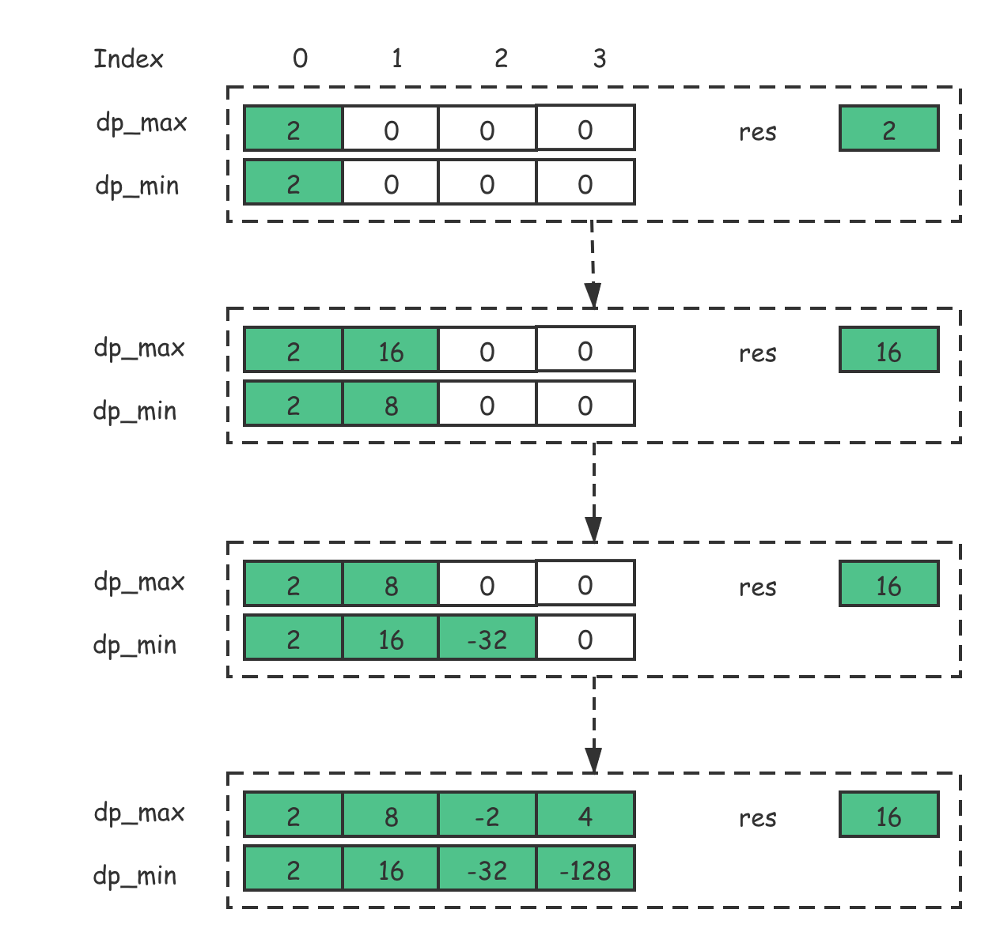
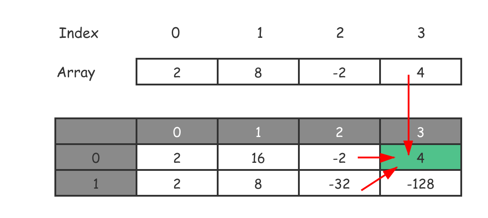

- 00 导读 动态规划问题纷繁复杂，如何系统学习和掌握它？.md.html
- 00 开篇词 为什么大厂都爱考动态规划？.md.html
- 01 硬币找零问题：从贪心算法说起.md.html
- 02 暴力递归：当贪心失效了怎么办？.md.html
- 03 备忘录：如何避免递归中的重复计算？.md.html
- 04 动态规划：完美解决硬币找零.md.html
- 05 面试即正义第一期：什么样的问题应该使用动态规划？.md.html
- 06 0-1背包：动态规划的Hello World.md.html
- 07 完全背包：深入理解背包问题.md.html
- 08 子数组问题：从解决动归问题套路到实践解题思路.md.html
- 09 子序列问题：详解重要的一大类动态规划问题.md.html
- 10 面试即正义第二期：常见的动态规划面试题串烧.md.html
- 11 动态规划新问题1：攻破最长递增子序列问题.md.html
- 12 动态规划新问题2：攻破最大子数组问题.md.html
- 13 动态规划算法设计的关键：最优子结构与状态依赖.md.html
- 14 面试即正义第三期：刷题指南，熟能生巧.md.html
- 15 课程回顾与总结（上）.md.html
- 16 课程回顾与总结（下）.md.html
- 加餐 买卖股票：常见且必考的动态规划面试题.md.html
- 结束语 在我家的后院养长颈鹿.md.html
- 捐赠
12 动态规划新问题2：攻破最大子数组问题
你好，我是卢誉声。
在“动态规划的套路”模块和上一课中，我们已经讨论了最典型的简单子数组问题，这其中包括：
- 回文子串个数；
- 最大子数组之和；
- 最长连续递增序列。
但是，在实际的技术面试环节，如果涉及到动态规划的子数组问题，那么面试官往往会根据经典问题，给出一些有所变化的问题。和上节课类似，为了能够熟练解决所有常见的子数组问题及其各类变化，在本课中，我将会为你讲解一些子数组问题的变种，作出问题的扩展，深挖该类型面试问题的解法。
最后，我还会给出攻破子数组的解题模板。由于是经验总结，因此在 90% 以上的情况下这个模板（套路）都是可行的，它足以应对你可能遇到的这类面试问题。
按照惯例，在开始今天的内容前，你可以关注一下：相较于简单的动归子数组问题（如“最长连续递增序列”问题），接下来的题目有何区别。有哪些东西是可以提取出来成为解题模板的？
现在，就让我们带着这个关注点，来开始今天的学习吧。
不重叠的子数组之和
还记得什么是动态规划问题中的子数组问题吧！我先简单概括一下。所谓子数组模型，一般就是从一个序列中寻找满足条件的子数组或者相关的扩展。而这类问题的特点就是答案是连续的子串，而非上一课中的子序列。
对于子数组问题，你应该已经跨过了基本解题的门槛。现在，让我们先来看第一个“面试级别”的子数组问题——不重叠的子数组之和，先看一下问题描述。
问题：给定一个整数数组 \(nums\) 和一个整数 \(k\)，找出 \(k\) 个不重叠子数组使得它们的和最大。每个子数组的数字在数组中的位置应该是连续的。返回最大的和。
示例1：
输入: nums = [1, 2, 3, 4]，k = 1
输出: 10
解释: 1 + 2 + 3 + 4 = 10
示例2：
输入: nums = [-1, 4, -2, 3, -2, 3]，k = 2
输出: 8
解释: 4 + (3 + -2 + 3) = 8
算法问题分析
其实，这个问题相当于第8课中“最大子数组之和”的威力加强版。在之前讲解的求最大子数组之和问题时，我们只需要简单地求出和最大的子数组；而这里需要求解的是，找出 \(k\) 个不重叠的子数组，使得整体的和最大。因此，从思路上看这两个问题之间肯定存在某种关系。
首先，我们可以初步判断这个问题是一个最优化的问题，而且一定是满足重叠子问题、无后效性和最优子结构，我们就不在这里做具体分析了。希望你可以根据我们之前分析问题的方法，来分析一下该问题，看它是否符合动态规划问题的特征。
现在，我们直接开始讲到底如何使用动态规划来解决这个问题。
分析写出状态转移方程
解决动态规划问题早已成为套路，我们直接拿套路来解题吧！
第一步，分析初始化状态。首先，如果这个问题里，数组的长度 < 子数组的数量 \(k\)。那么，由于数组无法被分解为 \(k\) 个子数组（每个子数组要至少包含一个元素吧）。因此，这种情况是没有结果的。
而如果数组长度 = 子数组的数量 \(k\)。那么，在这种情况下，我们只能将整个数组分解为 \(k\) 个子数组，其中每个元素单独组成一个子数组。此时，最大之和其实就是数组中所有元素之和。这就是我们的初始化状态，也就是边界条件。
第二步，我们来看一下状态参数。首先，我们要记住的是，但凡是子数组问题，数组的索引肯定是我们的一个状态参数！这是因为，我们需要不断移动数组的索引，在更小的数组的基础上求解出更大数组的解。
但是只有这个参数就足够了吗？恐怕还不够，因为我们还有另一个需要衡量的因素，就是子数组的数量 \(k\)。因此，我们可以先假定状态参数中包含：数组的索引 \(i\) 和子数组的数量 \(k\)。
第三步，我们需要来看怎么定义状态存储（备忘录）\(DP\) 的格式。在第8课最大子数组之和问题中，我们曾定义了一个备忘录 \(DP\[i\]\)，表示以 \(i\) 为结束位置的最大子数组之和。但在不重叠的子数组之和问题中，有两个状态参数，分别是数组的索引 \(i\) 和子数组的数量 \(k\)。因此，这个类似的问题就需要定义一个数组 \(DP\[i\]\[j\]\) 表示将数组的前 \(i\) 个元素划分为 \(j\) 个子数组时的最优解。
这个时候我们需要再思考一下。对于原问题来说，其真正的最优解中最后一个子数组的最后一个元素，并不一定是 \(i\) 这个元素，有这么几种情况：
- 舍弃第 \(i\) 个元素，将前 \(i-1\) 个元素划分为 \(j\)个数组；
- 选取第 \(i\) 个元素，将前 \(i-1\) 个元素划分为 \(j\) 个数组；而当前元素加入第 \(j\) 个数组。在这种情况下有一个特殊要求，即第 \(i-1\) 个元素必须在第 \(j\) 个数组中，这样第 \(i\) 个元素才能加入进去；否则，不连续的元素不能放在一个子数组中（我们在计算子数组问题，前提就是要“连续”）；
- 选取第 \(i\) 个元素，将前 \(i-1\) 个元素划分为 \(j-1\) 个数组；而当前元素自己成为第 \(j\) 个数组。
我们需要特别注意上面的第二点，由于无法确保 \(DP\[i\]\[j\]\) 中的第 \(i\) 个元素一定在第 \(j\) 个数组中。因此，我们需要再定义一个备忘录 \(M\[i\]\[j\]\)，表示将数组的前 \(i\) 个元素划分为 \(j\) 个子数组，并且第 i 个元素一定在第 j 个数组中时的最优解。
对于整个求解过程，你可以参考以下计算方向示意图。

从示意图中可以看出，这里有两个状态备忘录，分别是 \(dp\)（对应\(DP\[i\]\[j\]\)）和 \(m\)（对应\(M\[i\]\[j\]\)）。从这个案例可以看出，当动态规划问题稍微复杂一些的时候，我们会创建多个备忘录，而且备忘录之间的求解过程是相互关联的。
好了，万事俱备。有了以上分析之后，现在我们可以写出状态转移方程了。
\[DP\[i\]\[j\]=\\left\\{\\begin{array}{c}- DP\[i-1\]\[j-1\]+nums\[i\] \\ , i ==j \\\\\\- max(DP\[i-1\]\[j\], M\[i\]\[j\]) \\ , i > j- \\end{array}\\right.\]
\[M\[i\]\[j\]=\\left\\{\\begin{array}{c}- M\[i-1\]\[j-1\]+nums\[i\] \\ , i == j \\\\\\- max(M\[i-1\]\[j\], DP\[i-1\]\[j-1\]) + nums\[i\] \\ , i > j- \\end{array}\\right.\]
我们定义了两个状态转移方程，首先定义了 \(DP\[i\]\[j\]\) 的状态转移方程，然后定义了 \(M\[i\]\[j\]\) 的状态转移方程。这两个备忘录相互依赖、缺一不可。
编写代码进行求解
现在，我先给出该问题的算法求解代码，然后再做一些解释。
Java 实现：
public int maxSubArray(int[] nums, int k) {
int n = nums.length;
int[][] m = new int[n+1][k+1];
int[][] dp = new int[n+1][k+1];
for (int i = 0; i <= n; i ++) { // 初始化状态
for (int j = 0; j <= k; j ++) {
m[i][j] = 0;
dp[i][j] = 0;
}
}
for (int i = 1; i <= n; i++) { // 决策过程
for (int j = Math.min(i, k); j > 0; j--){
if(i == j){
m[i][j] = m[i-1][j-1] + nums[i-1];
dp[i][j] = dp[i-1][j-1] + nums[i-1];
} else{
m[i][j] = Math.max(m[i-1][j], dp[i-1][j-1]) + nums[i-1];
dp[i][j] = Math.max(dp[i-1][j], m[i][j]);
}
}
}
return dp[n][k]; // 输出答案
}
C++ 实现：
int MaxSubArray(std::vector<int> nums, int k) {
int n = static_cast<int>(nums.size());
int m[n+1][k+1];
int dp[n+1][k+1];
for (int i = 0; i <= n; i ++) { // 初始化状态
for (int j = 0; j <= k; j ++) {
m[i][j] = 0;
dp[i][j] = 0;
}
}
for (int i = 1; i <= n; i++) { // 决策过程
for (int j = min(i, k); j > 0; j--){
if(i == j){
m[i][j] = m[i-1][j-1] + nums[i-1];
dp[i][j] = dp[i-1][j-1] + nums[i-1];
} else{
m[i][j] = max(m[i-1][j], dp[i-1][j-1]) + nums[i-1];
dp[i][j] = max(dp[i-1][j], m[i][j]);
}
}
}
return dp[n][k]; // 输出答案
}
在代码中，为了代码的统一，我定义的缓冲区长度是 (n+1) * (k+1)，这么做便于处理边界情况。接着，我们将所有备忘录的值都初始化为 0。
接下来，就开始循环操作即决策过程。这里需要注意的是，\(j\) 是从最大到 0 倒推的。然后，在每次循环的时候，检查 \(i\) 和 \(j\) 的大小关系。由于 \(j\) 的初始值是 \(min(i, k)\)，必然有 \(j ≤ i\)。所以，这里无需处理 \(j > i\) 的情况。
当 \(i == j\) 时，说明子数组的数量等于整个数组的长度。因此，每个元素都是一个单独的数组，所以状态存储（备忘录） \(dp\) 和 \(m\) 的值都是 \(i-1\) 个数的结果 ➕ 当前数字。
由于我们的备忘录长度是 \(n+1\)，循环开始的时候下标是 1。所以，这里需要用 \(i-1\) 来从 \(nums\) 数组中取对应的元素。细节是魔鬼！你一定要注意。
当 \(i != j\) 时，通过 \(m\[i-1\]\[j\]\) 和 \(dp\[i-1\]\[j-1\]\) 得到前 \(i-1\) 个数字的最优解。 然后，将当前数字放入子数组中，因此，需要再加上当前元素得到前 \(n\) 个元素的最优解。而这个解是存放在 \(m\) 数组中的。
最后，我们需要考虑前 \(i\) 个数字的最优解是否会包含第 \(i\) 个数字：
- 如果包含，那么 \(m\[i\]\[j\]\) 就是前 \(i\) 个数字的最优解；
- 如果不包含，那么 \(dp\[i-1\]\[j\]\) 就是前 \(i\) 个数字的最优解。
因此，这里我们用 \(max\) 函数取了一下两者最大值，作为前 \(i\) 个元素的最优解。
最大子数组之积
我们再来看一个问题，这个问题其实也“最大子数组之和”问题的一个变种。先看一下问题的具体描述。
问题：给定一个整数数组 \(nums\)（由正整数和负整数组成），请你找出数组中乘积最大的子数组（该子数组中至少包含一个数字），并返回该子数组所对应的乘积。
示例1：
输入: nums = [2, 8, -2, 4]
输出: 16
解释: 子数组 [2, 8] 有最大乘积 16。
示例2：
输入: nums = [-2, 0, -1]
输出: 0
解释: 结果只能为 0，不能为 2。因为 [-2,-1] 不是子数组，是子序列，它们不是连续的。
分析并写出状态转移方程
这个问题的基本模型，与求最大子数组之和的问题非常类似，只不过将求和变成了求乘积。因此，我们可以初步判断这个问题是一个最优化的问题，而且一定是满足重叠子问题、无后效性和最优子结构的。
同样的，你可以自己根据我们之前分析问题的套路，来分析一下该问题是否满足使用动态规划求解的特征。
现在，我们直接用动归解题模板，来讲解该如何使用动态规划来解决这个问题，你可以关注一下该问题的求解与最大子数组之和的区别在哪里。
第一步，分析初始化状态。我们考察一下原问题中的边界条件，当数组索引为 0 的时候，这个时候 \(dp\[0\] = nums\[0\]\)。这是因为，当 \(i = 0\) 时这个子数组只能包含数组的第 0 项。
第二步，确定状态参数。就像前面我说的那样：只要是子数组问题，数组的索引肯定是我们的一个状态参数。因为我们需要不断移动数组的索引，不断在原来的最大数组的基础上和当前第 \(i\) 个元素相乘，在更小的数组的基础上求解出更大数组的解，因此数组的位置 \(i\) 肯定是一个参数。
Hmmm… 看起来这个问题跟求最大子数组之和的问题没什么区别嘛。显然，这里有坑，问题没有表面上看起来那么容易。我们仔细思考一下，求乘积与求和不一样的地方是什么？如果某次乘上的数字是负数，那么得到的结果很有可能会从最大变成最小，或者从最小变成最大！
因此，我们需要考虑正负数的问题，创建两个 \(DP\) 数组，作为存储状态以做状态转移，分别为 dp_max[n] 和 dp_min[n]。当迭代到当前的数字为负数时，需要对调 dp_max[i-1] 和 dp_min[i-1]，即 swap(dp_max[i-1], dp_min[i-1])。这是因为，当前这个负数 nums[i] 乘以上一个数后，最大的会变成最小的，而最小的会变成最大的。那么就在乘之前将它们俩对调。
这样一来，求乘积之后的结果就仍然是正确的：dp_max[i] 维护的仍然是当前最大值，dp_min[i] 维护的是当前最小值。
最后，由于原问题要求的是最大值。因此，每次迭代将 res 与 dp_max[i] 做比较，用 max 函数取最大值。最终，res 就是原问题所需的答案。

以上状态转移图中，有一个现象值得关注。那就是在第三轮迭代时， dp_max[1] 和 dp_min[1] 的值做了交换。
这是因为 nums[2] 对应的数字 -2 为负数，因此在迭代前做了数字的交换。当前这个负数乘以上一个数后，最大的会变成最小的，而最小的会变成最大的。那么就在乘之前将它们俩对调。
\[DP\_{max}\[i\] = max \\{ nums\[i\], \\ DP\_{max}\[i-1\] \* nums\[i\] \\}\]
编写代码进行求解
这个问题最后的状态转移比较简单，我直接给出求解代码。
Java 实现：
public int getMaxProduct(int[] nums) {
int n = nums.length; if (0 == n) { return 0; }
int[] dp_max = new int[n]; Arrays.fill(dp_max, 0);
int[] dp_min = new int[n]; Arrays.fill(dp_min, 0);
dp_max[0] = nums[0]; // 初始化状态
dp_min[0] = nums[0];
int res = nums[0];
for (int i = 1; i < n; i++) { // 决策过程
if (nums[i] < 0) {
int temp = dp_max[i-1];
dp_max[i-1] = dp_min[i-1];
dp_min[i-1] = temp;
}
dp_max[i] = Math.max(nums[i], dp_max[i-1] * nums[i]);
dp_min[i] = Math.min(nums[i], dp_min[i-1] * nums[i]);
res = Math.max(res, dp_max[i]);
}
return res; // 输出答案
}
C++ 实现：
int GetMaxProduct(std::vector<int>& nums) {
int n = static_cast<int>(nums.size()); if (0 == n) { return 0; }
int dp_max[n], dp_min[n];
memset(dp_max, 0, sizeof(dp_max));
memset(dp_min, 0, sizeof(dp_min));
dp_max[0] = nums[0]; // 初始化状态
dp_min[0] = nums[0];
int res = nums[0];
for (int i = 1; i < n; i++) { // 决策过程
if (nums[i] < 0) { std::swap(dp_max[i-1], dp_min[i-1]); }
dp_max[i] = max(nums[i], dp_max[i-1] * nums[i]);
dp_min[i] = min(nums[i], dp_min[i-1] * nums[i]);
res = max(res, dp_max[i]);
}
return res; // 输出答案
}
另一种求解方法
在上面的方法中，我们充分利用了原问题的特点，用了一个“交换”的技巧实现了问题的求解。但事实上，这个问题还能用别的方法求解，也就是更加贴近于解题模板的方法。接下来，我们就来看看重新设计备忘录后的另一种解法。
现在按照套路来解决这个动态规划问题。
首先，这种解法的初始化状态和状态参数跟上面的解法完全相同。我们从“负数”这个问题开始重新进行分析。
我们需要仔细思考一下，求乘积和求和不一样的地方是，如果某次乘上的数字是负数，那么得到的结果很有可能会从最大变成最小，或者从最小变成最大！
因此我们需要考虑，如果第 \(i\) 个数字为负数，而到第 \(i-1\) 个位置的最小值也是负数，那么相乘之后很有可能变成最大值。所以我们的状态参数还要加上一个 \(j\)（1 或 2），\(DP\[i\]\[0\]\) 表示数组前 \(i\) 个元素的最大乘积，\(DP\[i\]\[1\]\) 表示数组前 \(i\) 个元素的最小乘积。
接着，我们需要来看怎么定义状态转移方程和备忘录的格式。根据我们的状态参数，我们的备忘录 \(DP\[i\]\[j\]\) 是一个二维数组。其中 \(j\) 的维度是 2，\(DP\[i\]\[0\]\) 表示数组前 \(i\) 个元素的最大乘积；\(DP\[i\]\[1\]\) 表示数组前 \(i\) 个元素的最小乘积。
在这种情况下，\(DP\[i\]\[0\]\) 可能有下面三种情况：
- 结果为 \(nums\[i\]\) 自身，不和其它元素相乘；
- 正数，则要乘以 \(DP\[i-1\]\[0\]\)，也就是前 \(i-1\) 个元素的乘积最大值，这样才能得到最大值；
- 负数，则要乘以 \(DP\[i-1\]\[1\]\)，也就是前 \(i-1\) 个元素的乘积最小值，这样才能得到最大值。
最后，从这三个值中取最大值即可。同理，\(DP\[i\]\[1\]\) 也可能有三种情况：
- 结果为 \(nums\[i\]\) 自身，不和其它元素相乘；
- 正数，肯定要乘以 \(DP\[i-1\]\[1\]\)，也就是前 \(i-1\) 个元素的乘积最小值，这样才能得到最小值；
- 负数，肯定要乘以 \(dp\[i-1\]\[0\]\)，也就是前 \(i-1\) 个元素的乘积最大值，这样才能得到最小值。
最后，从这三个值中取最小值即可。整个状态转移过程就如下图所示。

从图中可以看到，\(DP\[3\]\[0\]\) 需要根据 \(DP\[2\]\[0\] \* nums\[3\]\)、\(DP\[2\]\[1\] \* nums\[3\]\) 和 \(nums\[3\]\) 综合判定，最后取最大值。
基于以上分析，我们就可以写出状态转移方程了。
\[DP\[i\]\[j\]=\\left\\{\\begin{array}{c}- max(dp\[i−1\]\[0\]∗nums\[i\],dp\[i−1\]\[1\]∗nums\[i\],nums\[i\]) \\ , j = 0 \\\\\\- min(dp\[i−1\]\[0\]∗nums\[i\],dp\[i−1\]\[1\]∗nums\[i\],nums\[i\]) \\ , j = 1 \\\\\\- \\end{array}\\right.\]
从这个解法和状态转移方程，我们可以看出，其实我们在状态存储（备忘录）上多创建了一个维度来记录下来数字是正数还是负数。本质上，跟前一种解法的思路是相同的，只不过具体求解方法不同。希望你在求解动归问题的时候，通过练习实现灵活运用。
按照惯例，下面给出第二种解法的算法求解代码，然后稍作解释。
Java 实现：
public int getMaxProduct(int[] nums) {
int n = nums.length;
int[][] dp = new int[n][2];
for (int i = 0; i < n; i ++) { // 初始化状态
dp[i][0] = nums[i];
dp[i][1] = nums[i];
}
for (int i = 1; i < n; i ++) { // 决策求解
dp[i][0] = Math.max(dp[i - 1][0] * nums[i], Math.max(nums[i], dp[i - 1][1] * nums[i]));
dp[i][1] = Math.min(dp[i - 1][1] * nums[i], Math.min(nums[i], dp[i - 1][0] * nums[i]));
}
int ans = dp[0][0];
for (int i = 1; i < n; i ++) { ans = Math.max(ans, dp[i][0]); }
return ans; // 输出答案
}
C++ 实现：
int GetMaxProduct(vector<int> nums) {
int n = static_cast<int>(nums.size());
int dp[n][2];
for (int i = 0; i < n; i ++) { // 初始化状态
dp[i][0] = nums[i];
dp[i][1] = nums[i];
}
for (int i = 1; i < n; i ++) { // 决策求解
dp[i][0] = max(dp[i-1][0] * nums[i], max(nums[i], dp[i-1][1] * nums[i]));
dp[i][1] = min(dp[i-1][1] * nums[i], min(nums[i], dp[i-1][0] * nums[i]));
}
int ans = dp[0][0];
for (int i = 1; i < n; i ++) { ans = max(ans, dp[i][0]); }
return ans; // 输出答案
}
以上代码中，我们首先创建了一个二维数组作为该动态规划解法的备忘录。然后，把最大值数组和最小值数组的各个位置赋予初值，也就是第 \(i\) 个元素，处理边界情况。
接下来，执行循环。我们每次都会处理最小值数组和最大值数组，求以 \(i\) 结尾的数组的最小乘积和最大乘积。最后，从所有的最大乘积中返回最大值。
攻破子数组问题的解题模板
一般人会说，子数组问题并没有一个统一的模板，很多问题还是需要具体问题具体分析。但是，我们已经做过这么多题目了，其实已经隐约发现了其中的套路。
首先，所有动态规划领域中的子数组问题，基本都需要遍历原来的数组，使用数组元素下标作为子问题的状态参数。除此之外，在更复杂的问题中，我们可能还会使用更多的状态参数。一般来说，如果不考虑空间复杂度优化，那么一般有几个状态参数，备忘录就要用几维数组。
举个例子，如果只有数组元素的下标作为状态参数，那么我们只需要使用一维数组 \(DP\[i\]\) 作为备忘录；如果除了数组元素下标，还需要第二个状态参数 \(j\)（假设有这么一个参数），那么就需要使用二维数组 \(DP\[i\]\[j\]\) 作为备忘录；如果再不济碰到三个参数（技术面试一般不会到这个程度）就需要三维数组 … 以此类推。
按照解题套路，确定了初始化状态、状态参数，就需要写出状态转移方程，也就是决策代码，基本模板如下所示：
int Solution(std::vector<int>& nums) {
int n = nums.size(); if (n == 0) { return 0; }
int dp[n];
// 请你注意，这里需要根据具体问题，做初始化状态
for (int i = 0; i < n; i ++) {
initialize(dp, i);
}
// 状态转移与决策
for (int i = 0; i < n; i++) { // 决策
dp[i] = 最值函数(dp[i], dp[i - 1] + ...);
}
return get_result(dp);
}
最值函数指的是像 \(min\)、 \(max\) 这样的求最值函数。在复杂的问题中，这个最值函数也会变得非常复杂，一般如果有一个状态参数就需要一层循环，有两个状态参数就需要两层循环。
课程总结
动态规划中的子数组问题看起来比较类似，但其实很多题目需要我们举一反三、灵活处理。当然这些问题都脱离不开本课结尾提到的解题模板。
解决这些问题的关键在于分析出除了数组索引之外还存在什么状态参数，一旦能够找到合适的状态参数，所有的子数组问题就迎刃而解了。所以我们需要多做练习，才能熟练解决类似的子数组问题。
课后思考
在本课中，我讲解了如何处理乘积最大子数组问题。但其实这个问题无论是时间复杂度还是空间复杂度都有可以提升的空间，请思考一下如何降低这个问题的时间复杂度和空间复杂度，并给出解决方案。
欢迎留言和我分享你的想法，我们一同交流！
© 2019 - 2023 Liangliang Lee. Powered by gin and hexo-theme-book.